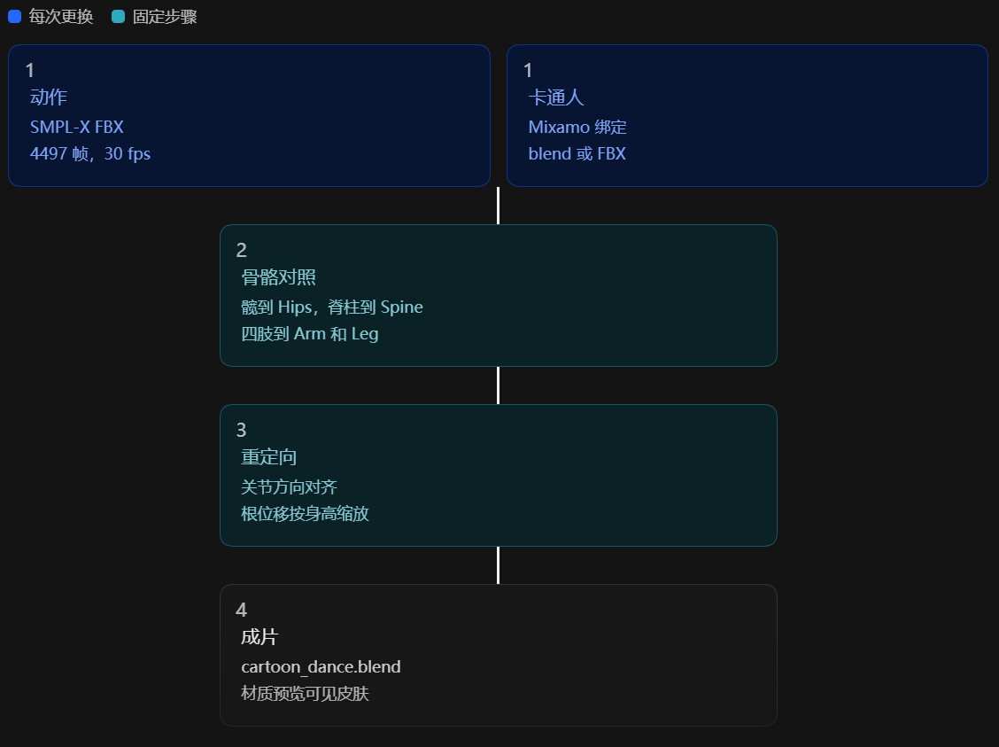
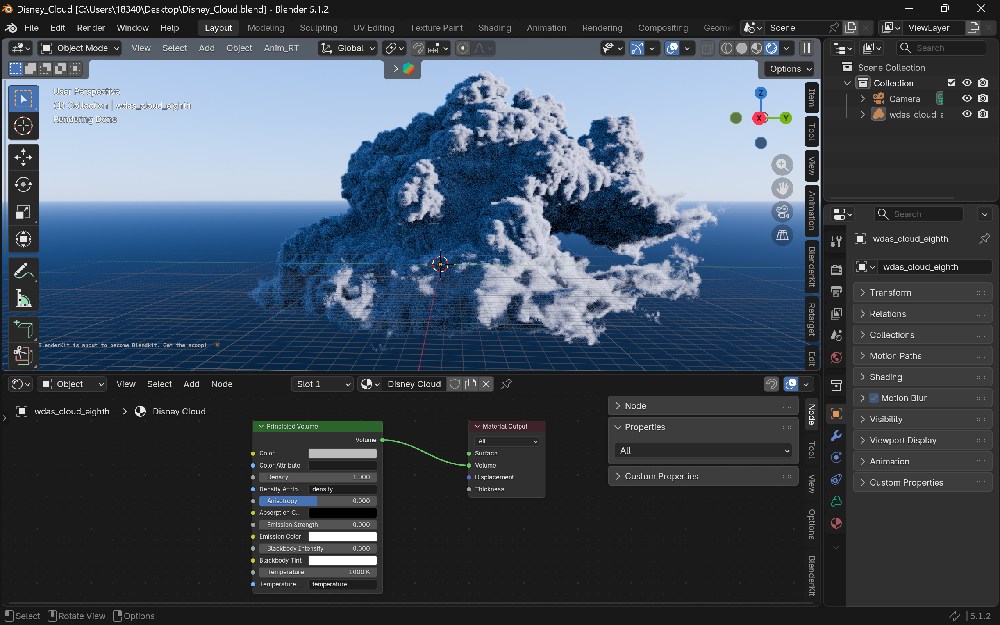
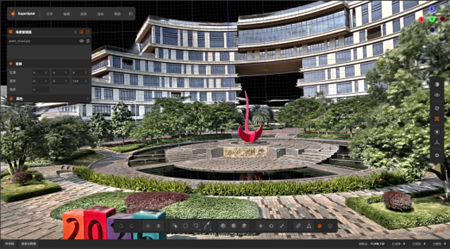
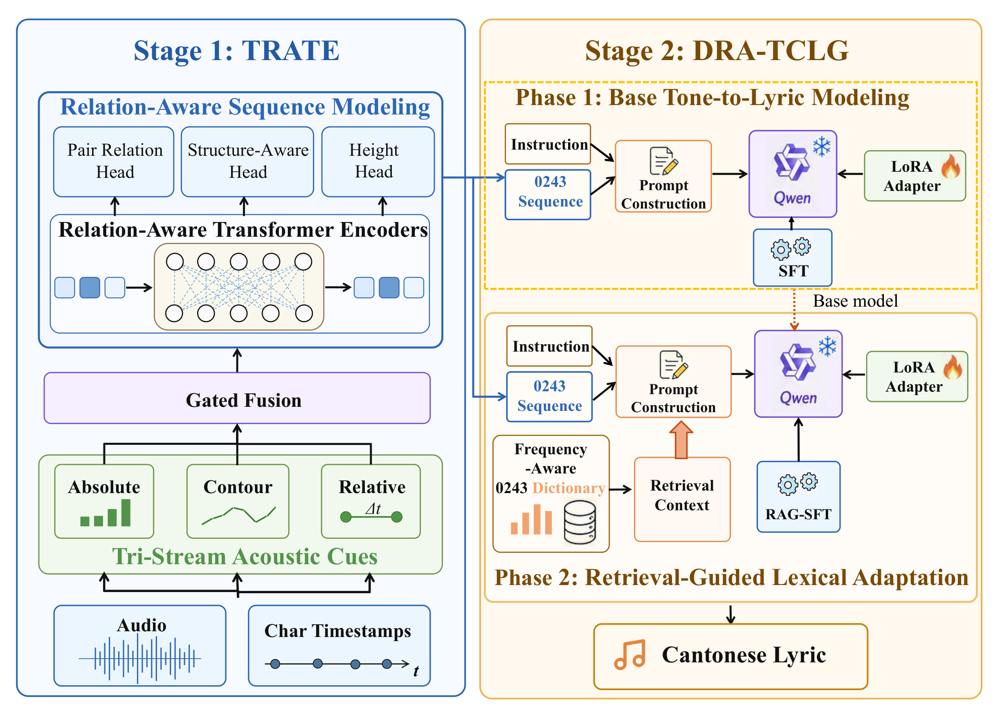

基于多模态模型的
三维动画生成流水线
项目简介
我们正在探索一条模块化流水线，将叙事文本、角色图像以及场景图像或视频转化为三维动画。六个工作方向涵盖前期实验、系统集成与评估。
核心问题是：如何让场景重建、角色动作、物理仿真与音乐协同工作，生成连贯的动画视频？
技术流程

场景参考用于构建环境，角色参考用于构建模型。智能体编剧将叙事转化为动作与音乐指令，场景仿真再整合环境和动作，输出视频。
六个工作方向在此基础上加入分镜与镜头规划、物理环境交互，以及共享记忆和时序控制，以协调生成的动作与音乐。
第 01 部分
分镜与镜头设计
将叙事转化为分镜、镜头构图、拍摄角度与时序安排，指导智能体编剧和动画制作，并对生成的动作进行绑皮。


第 02 部分
角色动作生成
将重建的角色模型与智能体的动作指令相结合，为场景仿真生成角色动作。
基于对 14 款主流 Text-to-Motion 模型的系统评测（涵盖 1,025 条 Prompt），我们选用 HY-Motion-1.0，根据预设脚本与智能体指令生成角色动作，并通过多层次评测验证生成效果。相关 Benchmark 研究已被 AACL-IJCNLP 2026 主会oral接收。
第 03 部分
物理特效仿真
构建物理仿真层，模拟运动物体扰动暖云体积时产生的云体变形、尾流与阻力，扩展整体流水线中的场景仿真环节。


研究范围依据 Hao Xu 的论文开题报告云与刚体耦合仿真第 2.1–2.3 节。以下方法与里程碑为研究计划，成果将随项目推进补充。
研究问题
实现刚体与暖云之间稳定、视觉可信的双向交互，需要哪些物理机制？
与整体流程的衔接
模块接收场景几何，以及动作阶段提供的时序一致的姿态、轨迹或交互事件，目标是在仿真场景中生成能够响应交互的云体和作用于运动物体的反作用力。
拟采用的方法
使用欧拉网格表示云的密度、速度与温度，通过局部动量交换耦合云与刚体，再研究浮力，以及可选的凝结与潜热效应，重点关注视觉合理性与数值稳定性。
云和火焰均属于特效研究范围；本开题报告具体聚焦云与刚体的交互。
实验与评估计划
| 实验 | 考察内容 |
|---|---|
| 静态云 | 引入运动物体前的基线稳定性。 |
| 运动物体侵入 | 物体穿过云体时的单向扰动。 |
| 动量耦合 | 尾流形成、阻力与动量一致性。 |
| 热耦合 | 浮力与垂直运动。 |
| 潜热 | 简化相变过程的影响。 |
结合视觉对比，跟踪动量一致性、阻力变化规律、尾流恢复、垂直运动与数值稳定性。
计划里程碑与后续工作
- 明确物理问题范围，调研云仿真与流固耦合。
- 构建并验证基础云求解器。
- 集成刚体运动与动量交换。
- 研究反作用力、浮力及可选的潜热效应。
- 评估受控交互实验，制作可复现的演示。
第 04 部分
三维场景生成
根据场景图像和视频重建或生成三维环境，为动画与物理交互提供场景几何和空间布局。


围绕动画的故事、情绪与节奏设计配乐，使用 YuE2 制作和迭代项目音乐。相关研究包括 ARIA 的粤语歌词创作，以及正在推进的国语与粤语跨语言翻唱。
研究问题
如何使音乐服务于动画叙事，并在歌词创作与歌声生成中兼顾语言表达、旋律约束和演唱效果？
项目配乐：YuE2
以香港科技大学（广州）校园动画为应用场景，将分镜中的场景氛围与叙事变化转化为音乐段落、歌词和风格描述，使用 YuE2 生成配乐，并结合试听反馈持续调整。下方展示项目中生成的一个配乐样例。
创作方向
创作围绕校园游览、粤港澳大湾区协作与多元文化展开。V2 提示词以受香港流行音乐影响的国语流行为基础，将高胡、扬琴等广府器乐色彩与轻微未来感电子音色融入同一编曲。人声设定为自然、克制的年轻女声，以国语主唱，结尾副歌加入短句英语记忆点，不使用粤语歌词。
段落设计从梦幻抵达、校园探索、大湾区联结推进到集体舞蹈副歌，对应“好奇—发现—联结—共同喜悦”的情绪变化。统一的旋律动机在高胡、人声、电钢琴与合成器之间重复和变化，保持编曲空间与歌手身份一致。
| 小节 | 叙事与情绪 | 编曲重点 |
|---|---|---|
| 1–4 | 梦幻抵达 · 好奇 | 扬琴点缀、轻柔合成器氛围、简短高胡动机。 |
| 5–8 | 校园探索 · 发现 | 国语主歌进入，加入电钢琴、干净吉他、温暖贝斯与克制鼓点。 |
| 9–12 | 大湾区视野 · 联结 | 弦乐与电子琶音渐进，人声与高胡形成呼应。 |
| 13–16 | 集体舞蹈副歌 · 共同喜悦 | 鼓、贝斯、弦乐和电子层次更饱满，加入短英语记忆点与和声。 |
V2 风格提示词 · 英文原文
提示词目标：96 BPM、4/4 拍、约 16 小节与 40 秒；本次展示音频实长：95.879 秒（约 1 分 36 秒）。
以下保留本次提供的 style_v2.txt 内容，原文在中英文切换时保持不变。
Modern Mandarin Hong Kong-influenced pop fused naturally with Cantonese instrumental colors and subtle futuristic electronic production.
96 BPM, 4/4 meter, around 16 bars and approximately 40 seconds. The music should feel melodic, human, warm, youthful and emotionally expressive rather than like a generic corporate anthem or an exaggerated AI-generated cinematic track.
Use a clear youthful female Mandarin lead vocal with natural phrasing and restrained emotion. English should appear only as short memorable hook lines in the final chorus. No Cantonese lyrics.
The harmonic and melodic language should draw from polished Hong Kong pop: expressive melodic writing, warm electric piano, clean electric guitar, lyrical string arrangements, melodic bass and restrained pop drums. The song should develop gradually and leave space around the vocal instead of constantly adding layers.
Integrate traditional Cantonese / Lingnan instrumental colors organically into the same arrangement. Use gaohu as short lyrical response phrases and countermelodies rather than continuous lead playing. Use yangqin for delicate rhythmic sparkle and ornamentation. Subtle dizi or light wooden percussion may appear occasionally. Use gentle pentatonic ornaments, but do not turn the music into Cantonese opera, folk pastiche, or stereotypical Chinese festival music.
Keep subtle futuristic elements throughout: soft atmospheric synth pads, understated electronic arpeggios, modern sub bass and small digital textures. Traditional acoustic colors and electronic textures should coexist from the beginning rather than appearing as separate genre sections.
Structure the song as one continuous musical journey:
bars 1-4: dreamy arrival, airy and spacious, featuring yangqin sparkle, soft synth ambience and a short recognizable gaohu motif;
bars 5-8: campus discovery, Mandarin verse enters with electric piano, clean guitar, warm bass and restrained drums;
bars 9-12: broader Greater Bay Area feeling, gradually increase rhythmic motion with strings, subtle arpeggios and call-and-response between vocal and gaohu;
bars 13-16: uplifting final chorus for a group dance, fuller drums, bass, strings, synth textures and layered backing vocals, but still melodic and song-like rather than an EDM festival drop.
Maintain one recognizable melodic motif across all four sections. Reuse and transform it through gaohu, vocal melody, electric piano and synth rather than introducing unrelated melodies. Keep the same harmonic world, same singer identity and same production space throughout.
The emotional arc is:
curiosity -> discovery -> connection -> collective joy.
Avoid abrupt genre changes.
Avoid overly dramatic trailer music.
Avoid huge risers and drops.
Avoid excessive vocal stacking.
Avoid synthetic choir sounds.
Avoid overly busy arrangements.
Avoid cliché corporate inspirational music.
Avoid exaggerated Chinese traditional stereotypes.
Allow natural breathing space, small instrumental imperfections and human-like phrasing.
ARIA：从歌声音频到粤语歌词
ARIA 研究从歌声音频到粤语歌词的创作。在提供字级时间边界的条件下，TRATE 根据声学线索估计四档 0243 声调规划，DRA-TCLG 再结合该规划与检索得到的粤语词汇建议生成歌词。该工作已获 Findings of EMNLP 2026 接收，李晟宇为共同第一作者。

方法图截自论文第 4 页 Figure 2。 Li, Wang & Liu · ARIA · arXiv:2610.07902v1 · CC BY 4.0
国语与粤语跨语言翻唱
研究推进中
正在探索国语与粤语之间的同旋律歌词替换和跨语言翻唱，目标是在改变歌词及演唱语言的同时，尽量保留原有旋律、歌手音色与时长结构。目前已完成双语文本前端适配、原词重建评测，以及 LoRA 与全量 DiT 微调方案的对比，并开发了用于歌曲对筛选与复核的审核工具。后续继续推进配对数据与歌词编辑验证。
与整体流程的衔接
音乐模块依据分镜内容、情绪设定、片段时长和关键提示点，整理音乐段落、歌词与风格描述。生成和筛选后的音乐素材将供后续视听同步与视频合成使用，并结合画面继续调整段落衔接和时间安排。
后续工作
结合视频剪辑完善配乐段落、转场和关键提示点；记录每次生成的歌词、风格提示词与版本；在已有前端适配及原词重建结果的基础上，推进国语与粤语歌词替换的独立编辑评测。
第 06 部分
音乐与动作同步
探索如何用生成音乐引导舞蹈动作，并在共同的时间线上呈现人物动画。
从音乐到人物动画
- 1生成音乐ACE-Step
- 2音乐驱动舞蹈InfiniteDance 骨架动作
- 3人物动画Blender 动作重定向
配对演示
两段视频使用同一组生成音乐和舞蹈动作，分别展示原始骨架和映射到项目人物的试验。
正在加载视频。
视频约 30 秒（896 帧，30 帧/秒）。人物绑定和脚部接地仍在优化；这组视频用于展示流程，并非正式的同步效果评测。
查看此前的骨架实验
此前另一组音乐驱动骨架演示，作为独立实验保留。
方法与来源
配对演示复用了此前的级联生成结果：ACE-Step 生成音乐，InfiniteDance 以完整音乐为条件生成舞蹈，再通过 Blender 将动作映射到项目人物。
该历史动作解码使用的封装未调用官方最终脚本的水平速度分支。人物重定向跟随主要肢体方向和根部运动；目标骨长固定，关节位置与源动作并非逐点一致。
ACE-Step 1.5 · Li et al. (2026), InfiniteDance: Scalable 3D Dance Generation Towards in-the-wild Generalization